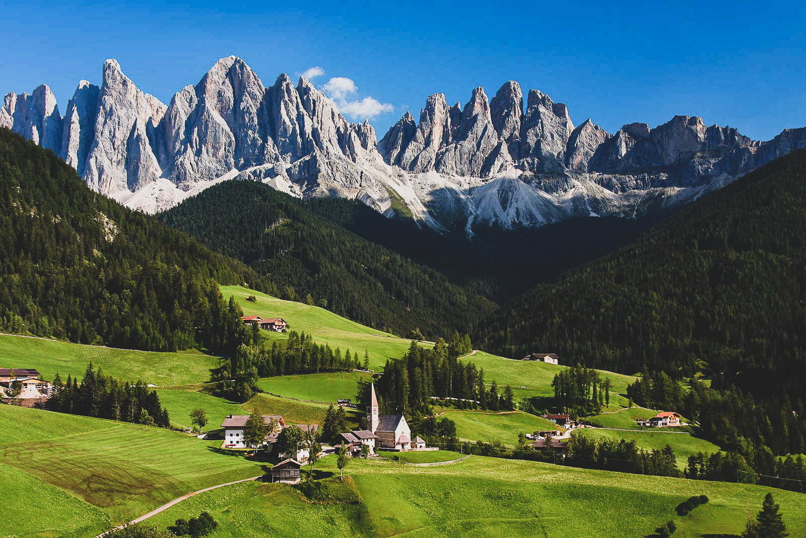

Overzicht
Op deze pagina vindt u een overzicht met informatie over de geplande uitstappen voor 2021.
Frankrijk: Vallée de la Clarée
02-02-2021 t.e.m. 09-02-2021
Lichte winterse huttentocht op sneeuwraketten in de Vallée de la Clarée in Frankrijk
Ongerepte sneeuwpracht en authentieke berghuttencharme: een niet te missen cocktail!
- Ervaren lokale wandelgids
- 6 wandeldagen
- Overnachting in comfortabele bemande berghutten
- Vertrek en aankomst in hôtel-gîte l’Auberge du Clot in Névache
De winter nodigt uit om te skiën, maar ook om te wandelen. Onder leiding van Pierre, onze vertrouwde Franse natuur- en wandelgids, maken we begin februari 2020 een lichte huttentocht in de Vallée de la Clarée. Een weekje weg van de bewoonde wereld, met alleen de hoognodige bagage in je rugzak, onze eigen sporen trekken in de ongerepte sneeuw … Tijdens een huttentocht op sneeuwschoenen geniet je intens, vrij en onbekommerd van de meest ongerepte schoonheid die het berglandschap te bieden heeft. Een onvergetelijk avontuur: voel je het al kriebelen?
De Vallée de la Clarée is een beschermd natuurgebied in het Franse departement Hautes-Alpes. Deze vallei staat bekend als zeer sneeuwrijk wegens haar bijzondere ligging: de naam van de centrale gemeente Névache stamt trouwens van “Annevasca” (=ingesneeuwd). Met sneeuwschoenen aan onze voeten verkennen wij deze winterpracht op een hele authentieke manier. ‘s Avonds laten we ons verwennen in comfortabele en sfeervolle berghutten onder een prachtige sterrenhemel.
Enige voorafgaande ervaring met sneeuwraketten en/of een doorgaande rugzaktrekking zal zeker van pas komen omdat we toch een iets zwaardere rugzak meenemen en vasthangen aan de doorsteek van hut tot hut. Maar voor alle duidelijkheid: de tocht is technisch zeker niet moeilijk. Een goede wandelconditie is zondermeer wél vereist. De huur van het materiaal (sneeuwraketten, wandelstokken, lawine-uitrusting) zijn in de prijs inbegrepen. Buiten warme winterkledij, volstaan stevige bergschoenen, een gewatteerde waterdichte broek en een 35-liter rugzak (max. 8 kg). Een gedetailleerde paklijst wordt bezorgd aan de deelnemers.
Richtprijs in vol pension: 710 EUR (overnachtingen in gedeelde kamers en slaapzalen) Noot: bij minder dan 8 deelnemers: 800 EUR Vervoer heen en terug is zelf onderling te regelen. Annulatie & bijstandsverzekering en dranken zijn niet inbegrepen
54ste MESA
23-06-2021 t.e.m. 26-06-2021
Europese mars van de herdenking en de vriendschap
Herdenkingsmars met vrienden om de momenten samen te koesteren
De MESA/EMHV is een grootschalig sportief en gezellig 4-daags evenement dat elke jaar in juni georganiseerd wordt door de Belgische Defensie en de Provincie Luxemburg. Deze mars werd in 1967 opgestart door het 3de Bataljon Ardeense jagers. Er worden vier trajecten van 32 km gestapt, telkens rond één van de steden die liggen op de verdedigingsstellingen van de Ardeense jagers in mei 1940. Naast de klassieke 4 X 32 km is er ook nog keuze uit 4 x 8, 16 of 24 km.
Elke dag word je 's ochtends met militair transport naar het vertrekpunt gebracht en 's avonds brengt men je terug naar het kamp waar je logeert. Wie dat wil, kan met eigen vervoer naar het vertrekpunt.
Het staat de deelnemers vrij hun dagelijkse wandeling te kiezen, alle combinaties zijn mogelijk. De startplaatsen zijn Arlon, Martelange, Bastogne en St Hubert. De overnachtingen gebeuren in een tentenkamp (wij kiezen meestal Laroche) voorzien van badinstallatie, kantine en medische hulppost.
Inschrijvingsprijs: 180 EUR omvat naast het logement, in tenten, alle eetmalen, het dagelijks transport, verzekering, medische eerste zorgen en een herinneringsmedaille.
Park Aigües Tortes - Spanje
25-07-2021 t.e.m. 02-08-2021
Berghuttentocht door het nationaal Park Aigües Tortes in de Spaanse Pyreneeën
Spaanse zon en prachtige natuur, de perfecte wandelcombo
Het Nationaal Park Aigües Tortes is gelegen in het midden van de Pyreneeën ten westen van Andorra. Het is een van de mooiste gebieden van de Spaanse Pyreneeën en ligt vol met prachtige bergmeren. De bergtoppen variëren in hoogte van 2 750 tot 3 050 meter.
Alle berghutten zijn gelegen op een hoogte van meer dan 2000m. De overnachting in de berghutten gebeurt in meerpersoonskamers waar ook ontbijt en avondmaal wordt gegeven.
Alle berghutten zijn gelegen op een hoogte van meer dan 2000m. De overnachting in de berghutten gebeurt in meerpersoonskamers waar ook ontbijt en avondmaal wordt gegeven.
Aangezien we een zevental dagen in de bergen vertoeven, dragen we onze rugzak zelf met het lunchpakket dat we in elke berghut krijgen. Elke stapdag moeten we minimum rekenen op 1000m stijgen en/of dalen, met uitschieters van 1460 m stijgen en 1700 m dalen. Dus een goede fysieke condities en wat uithouding is wenselijk. Elke dag krijgen we ook een meer te verwerken. Een van de toegangspoorten tot dit park ligt in het oostelijk dorpje ESPOT dat te bereiken is via St Gaudens en de vallei van Aran. Vanuit Leuven moet je rekenen op ongeveer 1200km tot Espot.
Richtprijs: 835 EUR voor 8 overnachtingen en 7 effectieve stapdagen in vol pension. Persoonlijke drank, verzekering, carpooling of vliegtuigreis niet inbegrepen.
Dolomieten - Italië
08-08-2021 t.e.m. 15-08-2021
Genieten in de Dolomieten
Overdag wandelen en 's avonds Italiaanse pizza om de batterijen op te laden
Onze verblijfplaats is een 3 *** hotel (uitgerust met wellness en een binnenzwembad) in Tiers, een kleine gemeente in Zuid-Tirol in het midden van de Zuid-Tiroolse Dolomieten. Het grootste deel van Tiers ligt in het beschermd gebied van het Natuurpark Schlern-Rosengarten. Een heerlijke bestemming voor een actieve vakantie dankzij het omvangrijke netwerk aan 530 km wandelpaden, landschappelijke pareltjes als het meer Karer See en de bergen rond Obereggen en Carezza. Nog indrukwekkender dan het grote aanbod aan activiteiten is het prachtige berglandschap tussen de betrokken bergmassieven.
In het dal zijn het de idyllische bergdorpjes die u betoveren met hun traditionele manier van leven, oude boerderijen en rustieke horecagelegenheden. Hebt u zin om wat stadslucht op te snuiven? Dan is een uitstapje naar de nabijgelegen provinciehoofdstad Bolzano/Bozen, met in het museum de beroemde Otzi-man, beslist de moeite waard.
We maken 6 dagtochten, sommige van uit het hotel en andere mits een verplaatsing met het openbaar vervoer en/of eigen vervoer. Normaal zijn de dagtochten zo opgevat dat we ’s middags in een alm of berghut terecht kunnen voor kleine maaltijd. In de prijs is een buskaart voor de ganse week inbegrepen.
De richtprijs is 635 EUR voor half pension in een tweepersoonskamer en 780 EUR in een éénpersoonskamer. Het minimum aantal is 8 personen. Een annulatie- en/of reisbijstandsverzekering is niet inbegrepen.